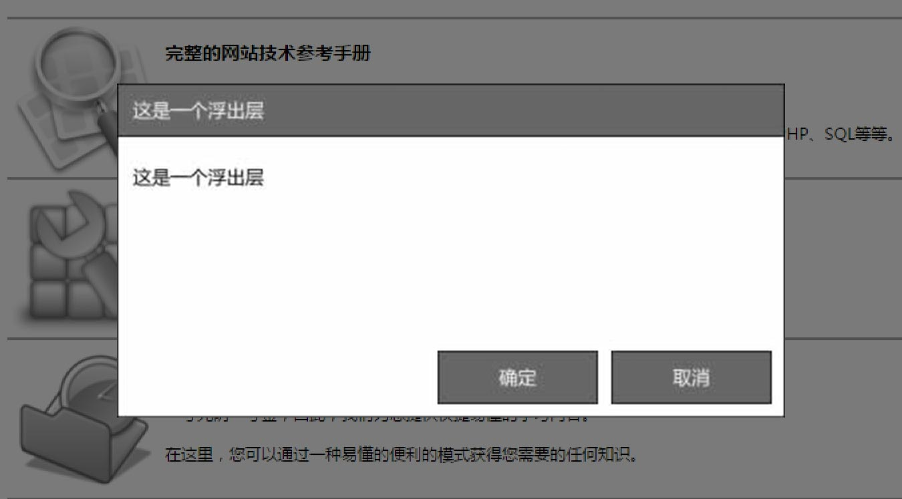

任务三十七：UI组件之浮出层
任务描述
- 参考如下设计图，实现一个浮出层的UI组件实现
- 
- 浮出层的中心默认在屏幕正中
- 当浮出层显示时，屏幕滚动时，浮出层始终保持位置固定在屏幕正中，不随屏幕滚动而变化位置。或者禁止页面在有浮出层出现时滚动
- 当浮出层显示时，点击浮出层以外的部分，默认为关闭浮出层。可以实现一个半透明的遮罩来挡住浮出层外的部分
- 浮出层的样式、内容和逻辑尽量解耦
- 提供使用JavaScript控制浮出层展现和关闭的接口
- 浮出层的窗口大小可以是一个默认固定值，也可以是随内容变化而自适应变化，也可以是通过接口参数进行调整，自行根据自己能力进行选择
- 有能力的同学可以实现浮出层的拖拽移动浮出窗口位置以及拖拽边缘来放大缩小浮出窗口的功能
任务注意事项
- 请注意代码风格的整齐、优雅
- 代码中含有必要的注释
- 可以合理选择使用其它第三方类库，但不建议